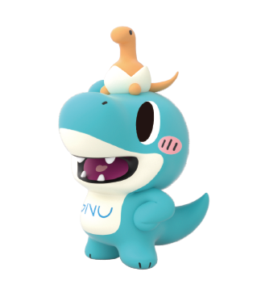

GNU English Practice
Humanities-based English Speaking Lab
```
Step 1. 영작 및 교정
AI 문장 교정 실행
AI가 문장을 다듬고 있습니다...
교정된 문장 (AI Refined):
문장을 입력하고 버튼을 누르세요.
🔊 원어민 발음 듣기
Step 2. 말하기 연습 및 평가
🎤 발음 시작 (클릭)
SCORE
0.0